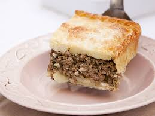

Potato Pie

Description
This is a classic for Argentine families, a very homemade flavor for any day of the week.
Ingredients
- 5 big potatoes
- half kilo of minced meat
- 2 onions
- green onion
- paprika
- cumin
Steps
- Boil the potatoes until they fall apart
- Mash them until puree and separate
- Cut the onions
- Reheat the onions
- add the meat and season
- In a pyrex, place the meat with the onions.
- Put a layer of puree on top and add to oven 20 min
- You did it!
Go to home page